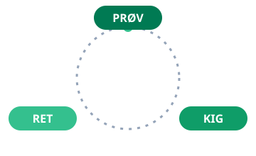

Modul 1
Byg en app med Lovable
Om 30 minutter har du bygget en app, du kan sende et link til. Vi forklarer bagefter, hvad der skete.
Øvelse 1: Din første app
Hands-on, ca. 20 min
- Gå til lovable.dev og log ind.
- I feltet på forsiden beskriver du en app med almindelige sætninger, på dansk eller engelsk. Brug din egen idé, eller kopiér en af skabelonerne herunder.
- Tryk send, og se på, mens appen bliver bygget.
- Klik rundt i appen i forhåndsvisningen. Virker den? Hvad mangler?
Skabelon-prompts (kopiér og tilpas)
Lav en app til vores frokostklub på arbejdet. Man skal kunne se ugens madplan,
melde sig til eller fra dagens frokost, og se hvem der har tur til at handle ind.
Den skal være på dansk og se venlig og enkel ud.
Lav en app hvor man kan booke vores to mødelokaler, "Store" og "Lille".
Man skal kunne se en oversigt over dagens bookinger, oprette en booking med navn
og tidspunkt, og slette sin egen booking igen. Dansk sprog, enkelt design.
Lav en feedback-væg til et kursus. Deltagerne skal kunne skrive en kort seddel
(ros, ris eller idé) og se alle sedler som farvede post-its på en væg.
Ingen login. Dansk sprog.
Tip
Skriv som du ville forklare opgaven til en ny kollega: hvad skal man kunne, hvem bruger det,
og hvordan skal det føles. Du behøver ikke tekniske ord. Faktisk går det tit bedre uden.
Øvelse 2: Lav den om
Første version er aldrig den sidste. Nu skal du opleve det vigtigste greb i hele kurset: iteration.
Hands-on, ca. 15 min
- Find tre ting i din app, du gerne vil have anderledes, stort eller småt.
- Bed om én ændring ad gangen i chatten. F.eks.: »Gør overskriften større og brug grønne farver« eller »Tilføj et felt hvor man kan skrive en kommentar«.
- Bliver resultatet forkert, så sig det ligeud: »Nej, det var ikke det jeg mente. Det skal i stedet være sådan her«. Du kan også trykke fortryd og prøve igen med en bedre formulering.
Observation undervejs
Læg mærke til hvornår det går godt, og hvornår det går skævt. Det bruger vi i forklaringen om lidt.
Øvelse 3: Del den
Hands-on, ca. 5 min
- Tryk på Publish i Lovable og få et offentligt link til din app.
- Send linket til din sidemand, og prøv hinandens apps.
- Giv én konkret feedback: hvad ville du ændre som bruger?
Du har nu bygget, rettet og udgivet en app. Uden at skrive kode. Lad det lige synke ind. Så tager vi forklaringen.
Hvad skete der lige?
Nu har du prøvet det på egen krop. Så er det tid til begreberne, som du lige har brugt uden at vide det.
Begreb: Prompt
Det, du skrev i feltet, kaldes en prompt: en instruks i almindeligt sprog.
Jo mere præcist du beskriver hvad, hvem og hvordan, jo bedre bliver resultatet.
Det mærkede du selv i øvelse 2, hvor en upræcis besked gav et upræcist resultat.
Begreb: Sprogmodel (LLM)
Bag Lovable sidder en stor sprogmodel, samme slags teknologi som ChatGPT og Claude.
Den har »læst« enorme mængder tekst og kode og er blevet god til at forudsige, hvad der
sandsynligvis kommer bagefter. Når du beder om en frokost-app, genererer den den kode,
der mest sandsynligt matcher din beskrivelse. Den forstår ikke din arbejdsplads.
Den mønstergenkender. Derfor rammer den tit rigtigt, og nogle gange helt ved siden af.
Begreb: Iteration
Du fik ikke det perfekte resultat i første forsøg, og det var pointen. At arbejde med AI er en
samtale, ikke en bestilling. Mønsteret er altid det samme: prøv, kig, ret og prøv igen.
Det gælder for apps, tekster, analyser og alt andet, du kommer til at bruge AI til.

Begreb: Vibe coding
Det, du lavede, kaldes populært vibe coding: du beskriver stemningen og formålet,
AI'en skriver koden, og du bedømmer resultatet ved at bruge det, ikke ved at læse koden.
Det er fantastisk til prototyper og småværktøjer. Det er ikke nok til systemer,
hvor fejl er dyre. Det kommer vi tilbage til i modul 2.
Grænserne: det skal du vide, før du bruger det på jobbet
- Fortrolige data: Skriv aldrig personoplysninger eller forretningshemmeligheder ind i værktøjer, din arbejdsplads ikke har godkendt. Spørg IT, hvis du er i tvivl.
- Fejl med selvtillid: AI'en lyder lige så sikker, når den tager fejl. Du er kvalitetskontrollen.
- Prototype er ikke produkt: Din app i dag er et fremragende udgangspunkt for en samtale, ikke et færdigt system med sikkerhed, backup og drift.
Refleksion i plenum
- Hvad overraskede dig mest, positivt eller negativt?
- Hvornår gik dialogen med AI'en skævt, og hvad fik den på sporet igen?
- Hvilken lille opgave fra din hverdag ville du bygge et værktøj til i morgen?
Kilder og videre læsning
- Lovables dokumentation med guides og eksempler
- Om begrebet vibe coding og hvor det kommer fra
- Om store sprogmodeller, teknologien bag værktøjet